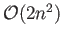

Next: Parallelizing flock detection Up: Towards Parallel Detection of Previous: Introduction
A flock pattern is defined as a group of entities which move together for a defined lapse of time [3] (figure 1). Applications to this kind of patterns are rich and diverse. For example, [4] finds moving flock patterns in iceberg trajectories to understand their movement behavior and how they related to changes in ocean's currents.
The BFE algorithm presents an initial strategy in order to detect flock patterns. In that, first it finds disks with a predefined diameter () where moving entities could be close enough at a given time interval. This is a costly operation due to the large number of points and intervals to be analyzed (  per time interval). The technique uses a grid-based index and a stencil (see figure 2) to speed up the process, but the complexity is still high.
[4] and [29] use a frequent pattern mining approach to improve performance during the combination of disks between time intervals. Similarly, [28] introduce the use of plane sweeping along with binary signatures and inverted indexes to speedup the same process. However, the above-mentioned methods still keep the same strategy as BFE to find the disks at each interval.
[2] and [8] use depth-first algorithms to analyze the time intervals of each trajectory to report maximal duration flocks. However, these techniques are not suitable to find patterns in an on-line fashion.
Given the high complexity of the task, it should not be surprising the use of parallelism to increase performance. [] use extremal and intersection sets to report maximal, longest and largest flocks on the GPU with the limitations of its memory model.
Indeed, despite the popularity of cluster computing frameworks (in particular whose supporting spatial capabilities [6,33,13,32]) there are not significant advances in this area. At the best of our knowledge, this work is the first to explore in-memory distributed systems towards the detection of moving flock patterns.
and 2017-05-15